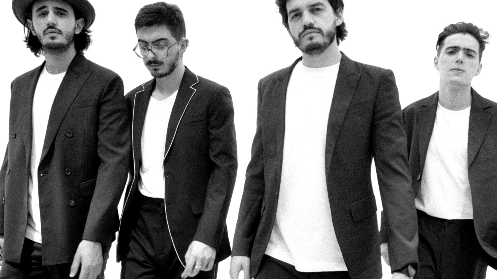

Morat es una banda colombiana de pop latino formada originalmente en Bogotá en 2011. Se dieron a conocer en 2015 con su éxito Mi nuevo vicio. Sus integrantes son Juan Pablo Isaza Piñeros, Juan Pablo Villamil Cortés, Simón Vargas Morales y Martín Vargas Morales. Hasta finales de 2016 había formado parte de la banda Alejandro Posada Carrasco, pero decidió abandonar el grupo, por lo que fue sustituido por Martín Vargas ese mismo año.



Morat es una banda global que sobrepasa las barreras del mundo hispanohablante. Han conseguido más de 12 Billones de streams en toda su carrera, 2 discos de Diamante y 55 Discos de Platino En España sus canciones acumulan 25 Discos de Platino. «PARIS» con Duki e incluida en SI AYER FUERA HOY es la canción que mejor debut ha tenido en toda la carrera de MORAT. MORAT es la banda en español N1 en Spotify Global. Sus giras son multitudinarias en grandes arenas con todos los tickets agotados, en México con 13 Auditorios Nacionales, Bogotá, en menos de un mes vendieron todas las entradas llenando 5 Movistar Arenas a principios de 2022, Santiago de Chile 2 Movistar Arena, 6 Wizink Center en Madrid, Palau Sant Jordi en Barcelona, 2 estadios Atanasio Girardot en Medellín junto a Juanes. Su última gira por España «Si Ayer Fuera Hoy» la han visto más de 100.000 personas. Por primera vez MORAT ha llevado su Si Ayer Fuera Hoy World Tour por Europa, tocando en Paris, Lisboa, Roma, Amsterdam y Berlín. MORAT también están presentes en la última campaña de LA LIGA MAHOU dónde no solo han compuesto la canción para la campaña, sino que también son los protagonistas de esta. Este año están nominados a los40 MA ́s en las categorías de MEJOR GIRA, MEJOR VIDEOCLIP, MEJOR COLABORACION. Con una base de fans sin parangón: TIKTOK= 2.8 Millones Instagram= 3.2 Millones de seguidores, Youtube= 6.63 Millones de subscriptores a su canal Spotify= +15.3 Millones de oyentes al mes Estos cuatro colombianos no solo hacen canciones y dan giras por el mundo, son personas con inquietudes, magia y talento con identidad propia, sencillos, viscerales y reflexivos.